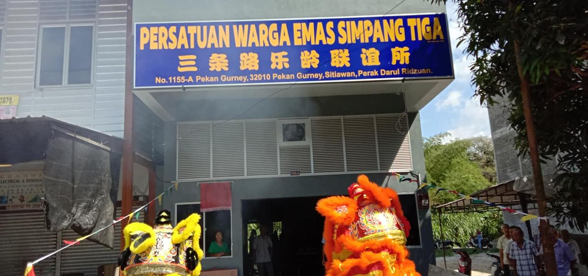
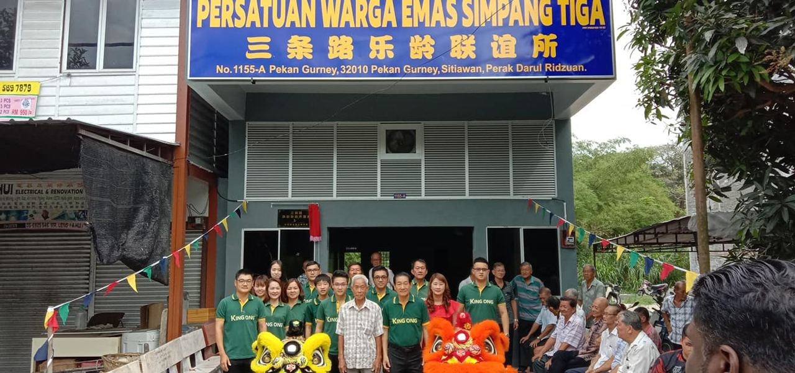
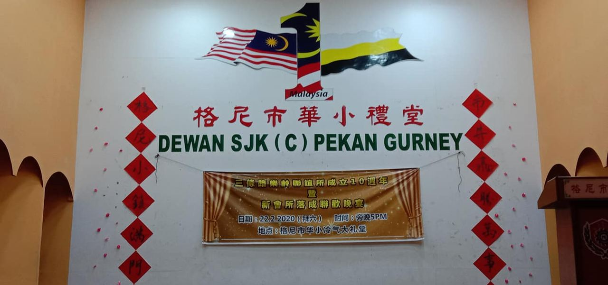
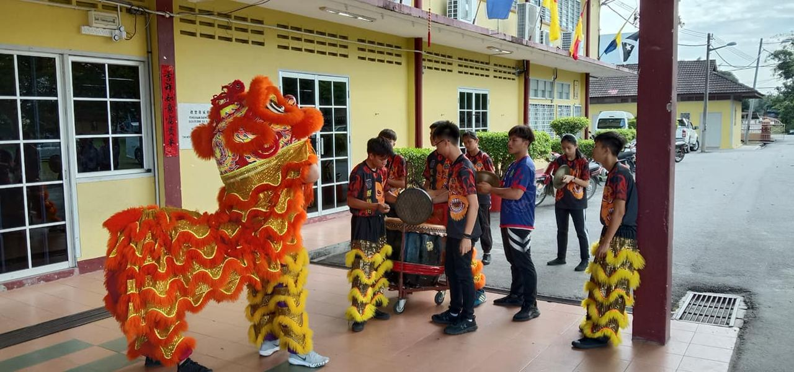
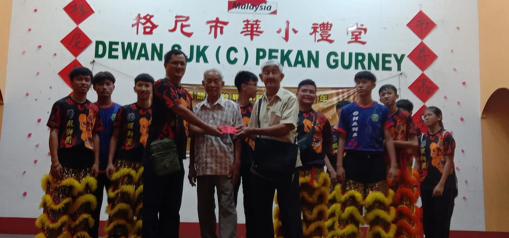

22/2/2020 本校醒狮团受邀请为三条路乐龄联谊所开张及迎宾。本校所收到的费
22/2/2020 本校醒狮团受邀请为三条路乐龄联谊所开张及迎宾。本校所收到的费用和红包经过团圆们一致同意，把全部的收费回馈给会所。为社区尽一份力。感谢醒狮团团员的付出。





22/2/2020 本校醒狮团受邀请为三条路乐龄联谊所开张及迎宾。本校所收到的费用和红包经过团圆们一致同意，把全部的收费回馈给会所。为社区尽一份力。感谢醒狮团团员的付出。




